설치
- NS 생성 (선택)
kubectl create ns {{Authentik namespace 이름}}- PG Cluster 생성 (선택)
- Admin password 생성
- Admin ID 는
akadmin이고, password 는 외부 secret 으로 주입할 수 있다. - 그래서 아래의 command 로 맹글어주면 된다.
- Admin ID 는
kubectl -n {{Authentik namespace 이름}} create secret generic {{Authentik admin secret 이름}} --from-literal=secret-key="$(openssl rand -base64 60 | tr -d '\n')"- 비밀번호를 확인하고싶으면 이래하면 된다:
- 당연한거지만 secret 의 내용은 암호화된게 아니다. 그래서 이름이 secret 이긴 하지만 절대로 외부에 공개되어서는 안된다.
kubectl -n {{Authentik namespace 이름}} get secret {{Authentik admin secret 이름}} -o jsonpath='{.data.secret-key}' | base64 -d; echo- Helm values
global:
env:
- name: AUTHENTIK_SECRET_KEY
valueFrom:
secretKeyRef:
name: {{Authentik admin secret 이름}}
key: secret-key
- name: AUTHENTIK_POSTGRESQL__PASSWORD
valueFrom:
secretKeyRef:
name: {{Authentik CNPG Cluster 이름}}-app
key: password
authentik:
postgresql:
host: {{Authentik CNPG Cluster 이름}}-rw
name: {{Authentik CNPG 기본 database 이름}}
user: {{Authentik CNPG superuser 이름}}
port: 5432
postgresql:
enabled: false
server:
ingress:
enabled: false
route:
main:
enabled: true
apiVersion: gateway.networking.k8s.io/v1
kind: HTTPRoute
hostnames:
- {{Authentic UI 도메인}}
parentRefs:
- name: {{Gateway 이름}}
namespace: {{Gateway 가 있는 namespace 이름}}
sectionName: {{Gateway listener 이름}}- Helm repo
helm repo add authentik https://charts.goauthentik.io
helm repo update- Helm install
helm -n {{Authentik namespace 이름}} upgrade --install authentik authentik/authentik -f values.yamlProvider/Application 생성
이 작업은
- Authentik 을 사용하려고 하는 각 서비스 마다 해주면 된다.
- 아래에서는 EXAMPLE 이라는 예시 서비스를 가지고 하는 예시이다.
1. Group 생성
- Authentik 으로 EXAMPLE 에 인증할 수 있는 애들을 제한하기 위해 Group 을 만든다.
- 우선 Admin panel 에서 Directory/Groups 로 들어간다.
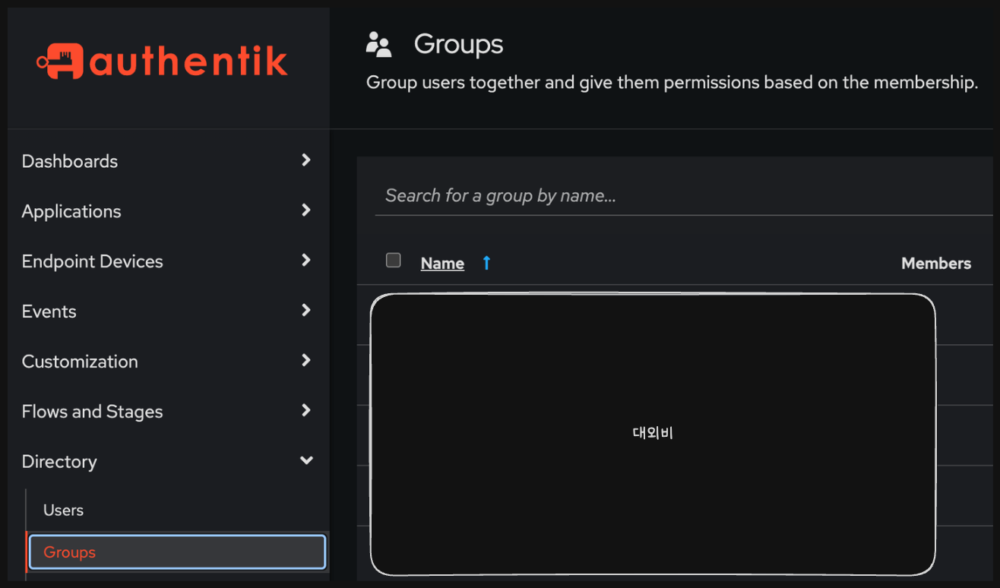
- 그리고 여기에서
New Group으로 group 을 만들어주면 된다.- 여기에서
Group name은 알아서 잘 적어주면 되고 - 나머지는 건들거 없다.
- 여기에서
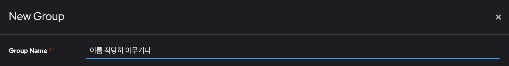
- 생성됐으면 해당 group 으로 들어가서 Users 안에 있는
Add Existing User로 추가해준다.
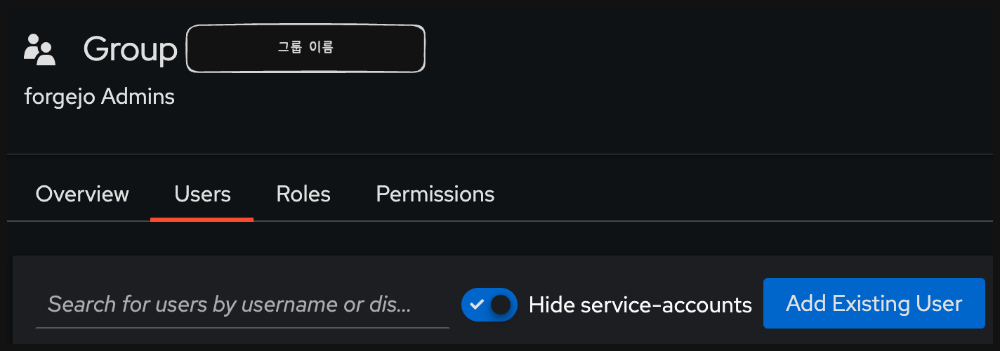
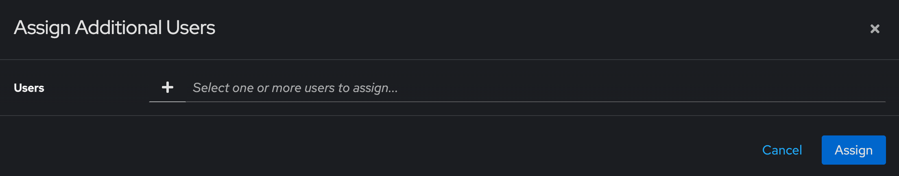
2. Provider/Application 생성하기
- 이제 EXAMPLE 를 Authentik 으로 OIDC 인증하기 위해 Application 을 만들어준다.
- Authentik 의 Admin panel 에서 Applications/Applications 로 들어가
New Application을 선택한다.
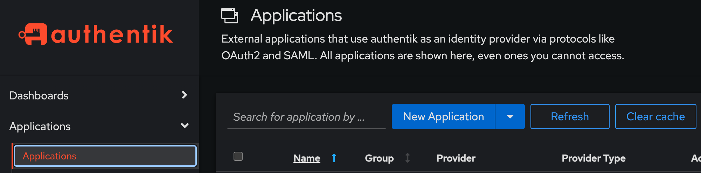
- Application
Application Name: 뭐 적당히 적어준다.Slug: 이건Application Name을 적으면 자동으로 채워지는데, 이 값을 기억해두자. 나중에 사용할거다.- 나머지는 냅둬도 된다.
- 여기서
UI Settings>Launch URL은 EXAMPLE 서비스의 UI 도메인을 적으면 된다.- 없어도 되긴 한데, 그냥 Authentik main page 에서 이놈 누르면 EXAMPLE 서비스 웹이 열리게 하는 거다.
- 여기서
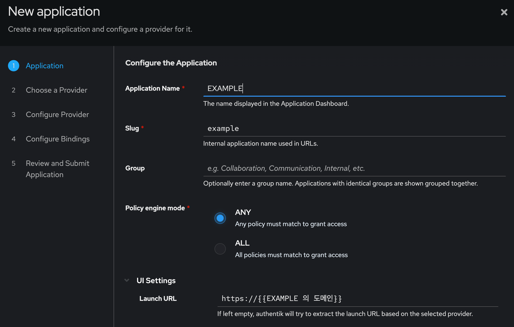
- Choose a Provider
- 는 OAuth2/OpenIDProvider 를 선택하면 된다.
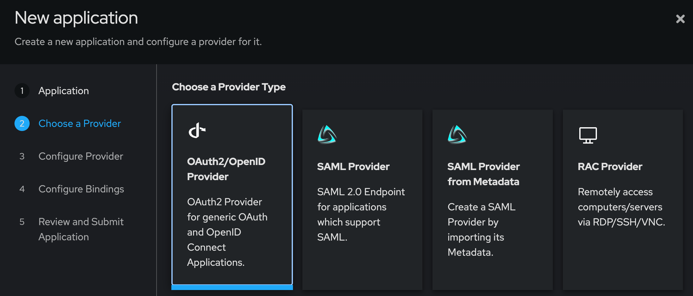
- Configure Provider: 이것들만 적어주면 된다.
- Provider Name: 냅둬도 된다.
- Authorization Flow:
*-implicit-*(default-provider-authorization-implicit-consent (Authorize Application)) 을 선택하면 된다. - Client ID: 이 값 복사 해두자.
- Client Secret: 이 값도 복사 해두자.
- Redirect URIs/Origins (RegEx):
Add entry를 눌러서 추가Strict/Authorization선택- URL 은 서비스마다 다르다. 각 작물을 참고하자.
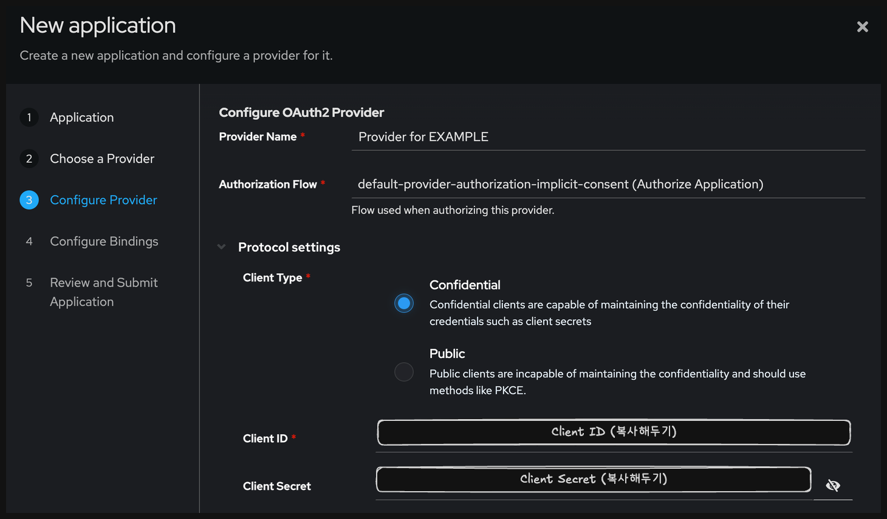
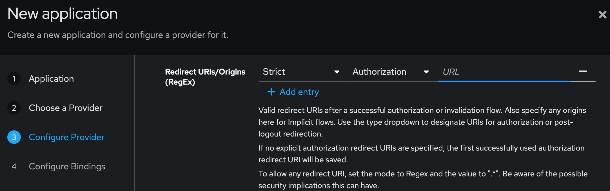
- Configure Bindings
- 여기서
Bind existing policy/group/user를 선택한 다음 - 여기 에서 생성한 group 을 넣어주면 된다.
Order는 0으로 해주면 된다.
- 여기서
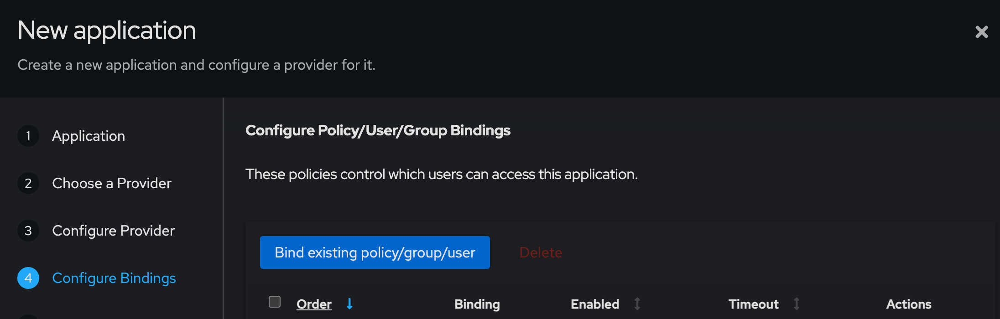
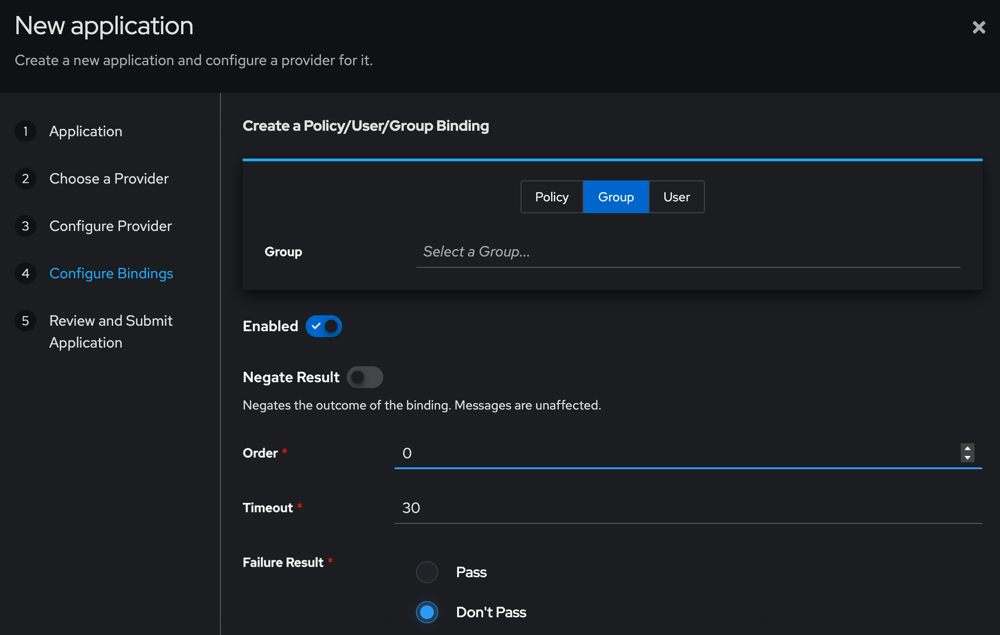
- Review and Submit Application
- 여기서는 그냥 확인하고
Create Application누르면 된다.
- 여기서는 그냥 확인하고
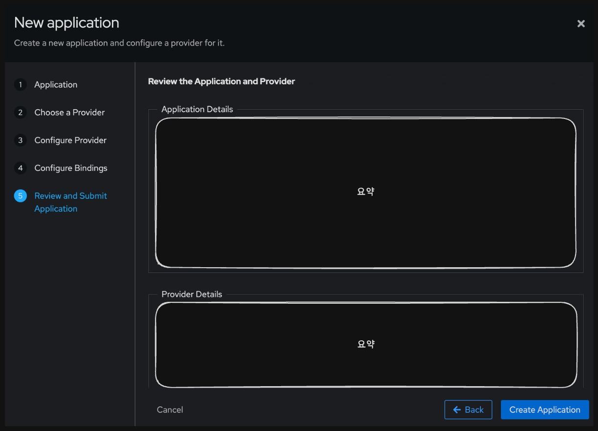